Open Science Practices
2023-04-24
Overview
Today’s session is on open science practices:
Reproducible project practices including:
Revision of file naming and folder structure.
Using metadata.
Using Git for version control and GitHub for collaboration and sharing of data and code.
Basics of version control (including staging, committing, .gitignore).
Using GitHub (creating and cloning repositories, pushing and pulling).
Overview
Today’s session is on open science practices:
Using the OSF for project hosting.
Storing study materials.
Integrations with GitHub for sharing data and code.
Generating/hosting pre-registrations (with embargoes).
Licensing to retain copyright and get attribution.
Using R to support pre-registration and project planning.
Literate programming to create papers, books, and blogs.
Proper Project Practices
Use a consistent folder structure across projects.
Use consistent naming across files.
Include metadata for yourself and others.
Folder Structure
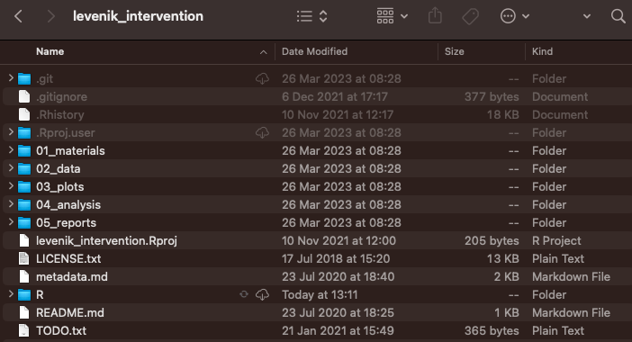Naming Files
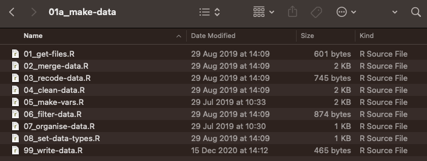Metadata
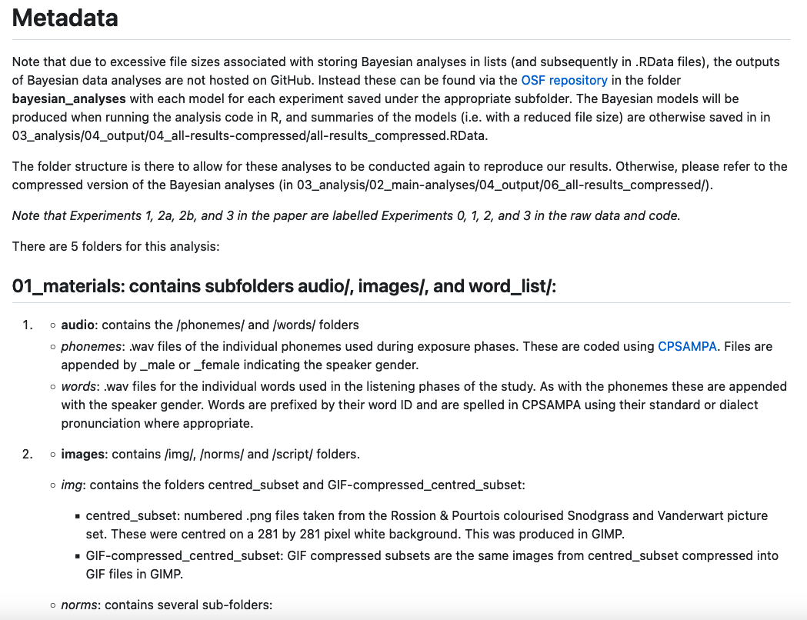Reviewing Proper Project Practices
These practices will help improve your chances to reproduce your work if you return to it in the future or for someone else to reproduce your work even if you don’t share it online.
Consistent naming of files and consistent folder structures make it easier to work with files programmatically and to understand file contents at a glance.
Metadata provides additional information on data that might otherwise be forgotten (e.g. how to score scales, labels for categorical data, bounds on data).
You aren’t protected by issues associated with data loss and have no easy way to share data.
Git and GitHub
Git is a version control system to manage and track the history of changes to files.
GitHub is a cloud-based hosting service to share, manage, and collaborate on repositories tracked with Git.

Without Version Control
- You’re working on a project. You have some raw data and need to process it, analyse it, and report it in a manuscript.
- At a minimum you have raw data, an R script, and a manuscript.
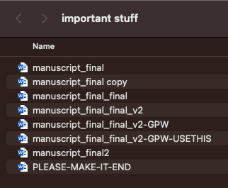
- Your colleague needs data in a new format, requiring an updated analysis script and manuscript.
- You leave the project for a while and don’t know which models are reported, from which data set.
Version Control
With version control system (e.g. Git), you take a snapshot of the files you’ve been working on at a given time and commit these to your project’s history.
Any updates to files are committed and stored in the project’s history. You can return to previous states whenever you like.
With a remote copy online (e.g. on GitHub), you and your collaborators can push and pull changes to it, keeping your local versions up to date.
Your project therefore contains three files only, reducing errors from not knowing how files link together.
A Basic Git Workflow
You can work with Git in the command line or using a client (e.g. GitHub Desktop/RStudio).
- Make a folder for each project you work on (we already do this), tracking it with Git and optionally GitHub.
- Make a commit every time you want a “snapshot” of the project.
- Make any changes to files you see fit. Stage changes and when happy commit them.
Git tracks file additions, deletions, and changes between each commit with an (optional) message.
Key Commands
- Add: Ad your changes to the staging area.
- Commit: Save the changes from the staging area to History.
- Checkout: Retrieve a previous commit from the history.
- Push: Push local changes to the central repo (i.e. remote on GitHub)
- Pull: Retrieve recent changes from the central repo to the local one.
- Status: Find out the status of the project (e.g. unstaged changes, if you’re above or behind the central repo.)
Why Use OSF/GitHub?
Gabelica et al. (2022) contacted authors with data sharing statements in 1792 manuscripts. 1669 (93%) authors either didn’t respond or were unwilling to share data.
Hosting data and code on GitHub means you can point people towards an online repository and avoid being hassled for data while still engaging in open sharing.
Hosting data and code in an online repository protects you against data loss: 3, 2, 1 rule – 3 backups in 2 locations, 1 being off site.
If you aim to collaborate with others, you can do so with proper version control using your remote GitHub repository to push and pull changes.
Walkthrough of Git/GitHub
Make a GitHub Account
- Download Git at https://git-scm.com/download and install it on your machine.
- Navigate to https://github.com/ and click Sign Up using a personal email address.
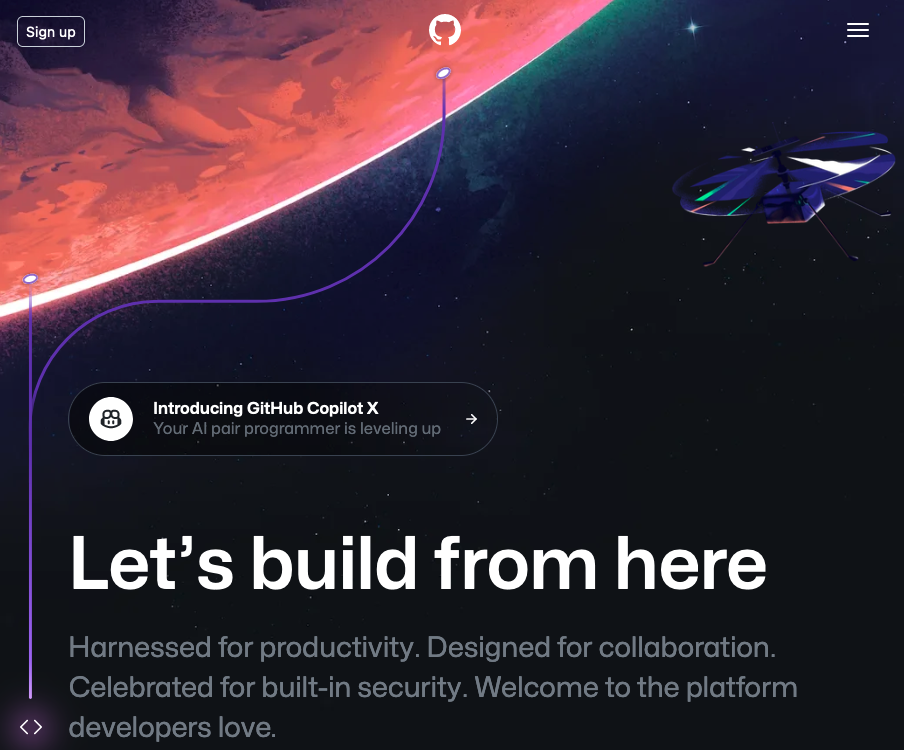
Create A Repo
- Click the green New button to make a new repo.
- Give it a short but informative title.
- Get a README, .gitignore (from template), & license.
- README is for descriptions, .gitignore ignores files you don’t want on GitHub, licenses tell people how to (re)use your content.
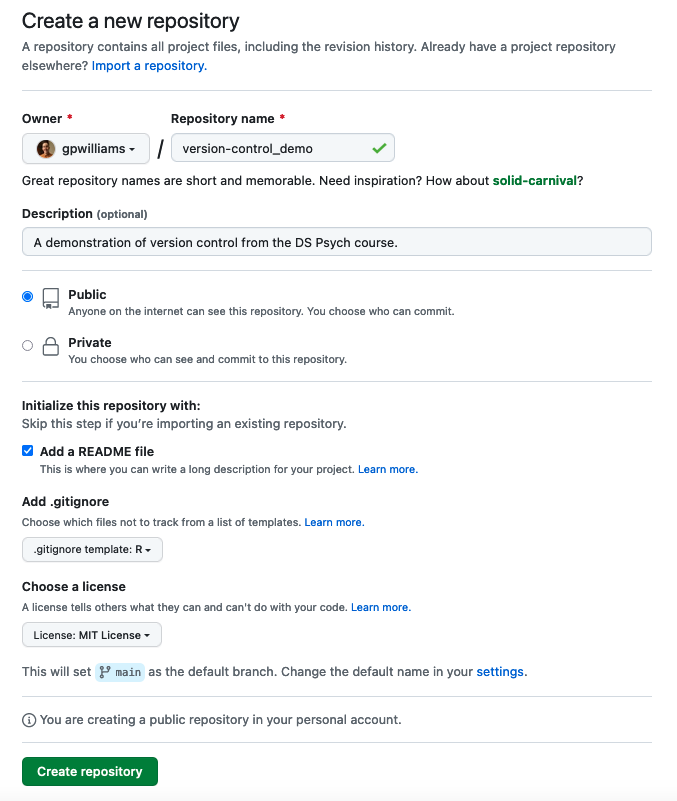
View Your Repo
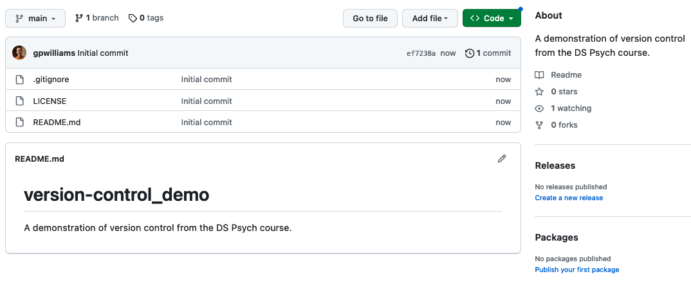Create a Project
Choose Version Control
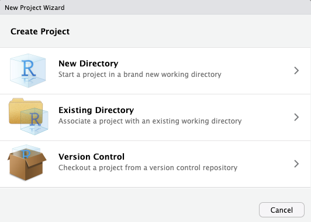
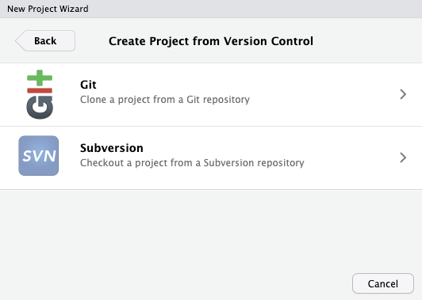
Clone Your Repo
Pass your URL from GitHub, give your project a name, and choose where to save it (somewhere safe).
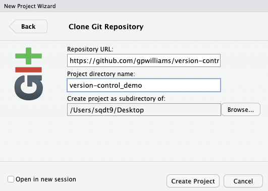Inspect the Git Pane
Once you’ve cloned your online repo, R will make a .Rproj in the folder, just like we normally do.
Notice the status is unknown as this is a new, untracked file.
Check the History
Confirm that you’ve only got one commit, your initial commit made when creating the repo on GitHub.
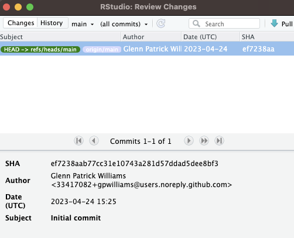Stage Files/Changes
Tick the box for any files that you’d like to put in the staging area.
Here we can track newly created files, changes to existing files, or files to be removed.
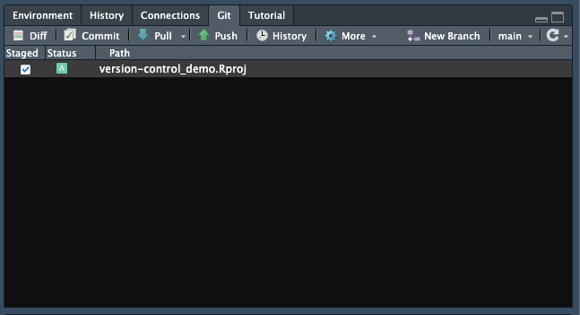
Commit Files
Commit your staged changes and add a message to define what you’ve done.
After committing, push your changes to the remote repo.
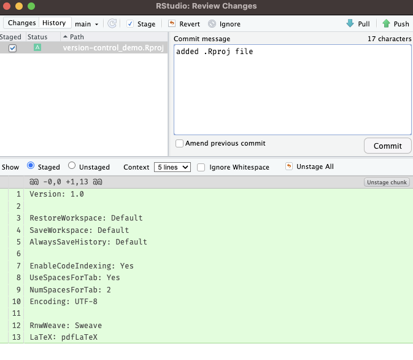
Finish Up
Your changes to the folder are now saved and updated in the remote repo.
Confirm this (if you want) by checking the repo on GitHub.
A Note on .gitigore
- This is a hidden file of items Git shouldn’t track. (View with
Cmd+Shift+.). - Comments are in
#, entire folders in e.g./folder/, or files as e.g.notes.txt. - You might not want to track
TODOlists, notes, or sensitive information.
Mine looks like:
# History files
.Rhistory
.Rapp.history
# Session Data files
.RData
.RDataTmpThe Open Science Foundation
Background
- The OSF is a free, open platform to support your research and enable collaboration.
- Has funding for server space for the next 50 years and rely on donations/grants.
- Lets you host your project data, materials, code, files, and documents (including pre-registrations.)
- You can invite collaborators to projects to make collaboration easier.
OSF Repositories
Public projects can be up to 50GB.
Has limited version control: can track changes to files uploaded to their servers.
GitHub (which is mainly for code), is limited to 2GB and 100Mb max per file.
Has more advanced version control (allowing branches etc.)
Nicely, the OSF integrates with GitHub.
OSF Walkthrough
Make a Project
- Register on the OSF via your personal email. Link your work one and ORCID if you like.
- Click Create new project.
- Add a desription, license, or change the name in the home page.
Make a Project
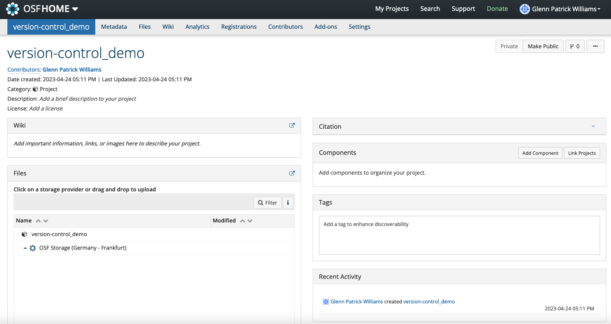A Note on Licensing
That means publishers can’t stop you from reproducing your work from a journal elsewhere.
Try CC-BY-4.0: Creative commons license, attribution needed, no other restrictions.
Licenses are very important for projects on the OSF. They tell people how to (re)use your work. Can they make a profit from it? Do they need to cite you?
Any licenses others try to impose after this date aren’t valid.
Add a License
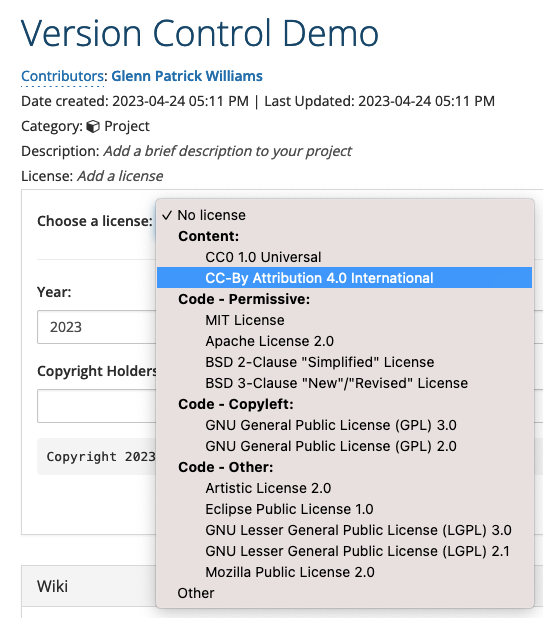
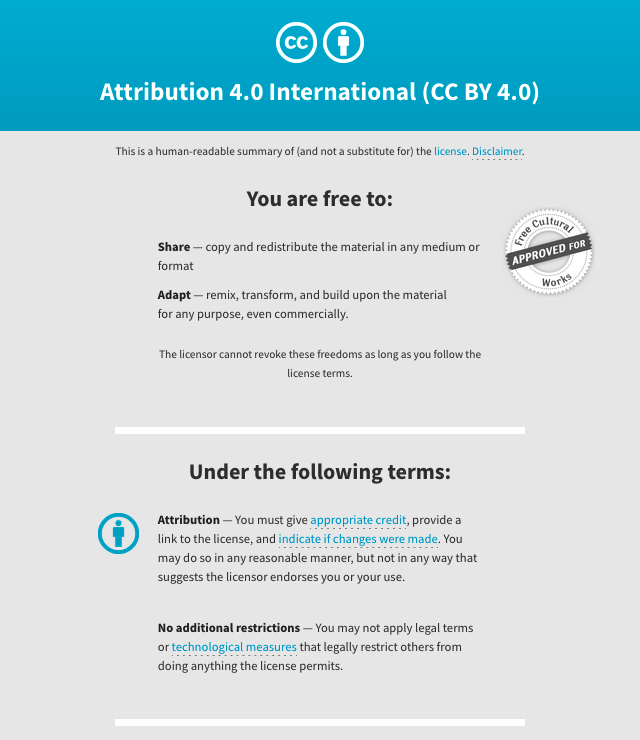
Enabling GitHub with the OSF
- Click Add-ons in the top bar and then Enable GitHub.
- Go to Configure Add-ons andImport Account from Profile. Choose your repo.
- You now have 2 forms of storage: one tracked from all changes on GitHub, one just on the OSF.
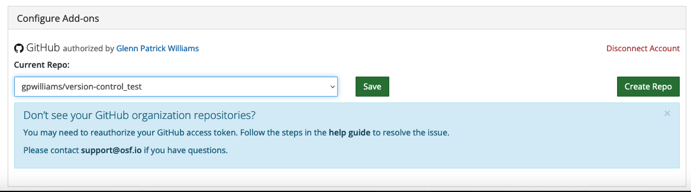
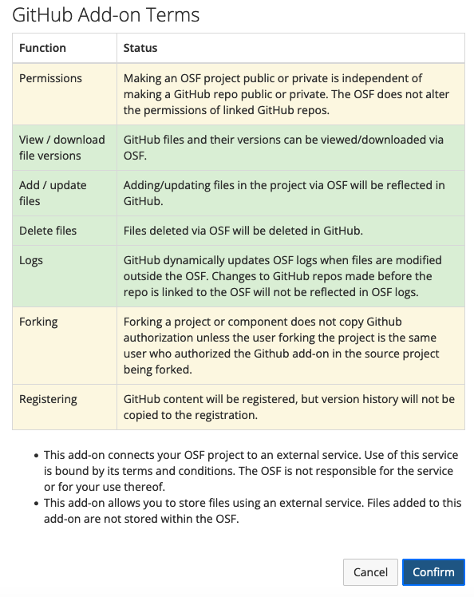
File Hosting
- File hosting just on the OSF is a good idea if you have materials that don’t change or analytical products that are too big to track using GitHub (e.g. Bayesian models)
- Pick storage in the EU for more data protection.
- You can alterantively integrate with Google Drive, Dropbox, Microsoft OneDrive etc.
Registrations
Allows you to take a snap shot of your repository that is frozen at a particular date and time.
Useful for showing study and analysis plans ahead of time (e.g. in pre-registration) and for showing timelines (e.g. ethics before data etc.)
Comes with templates to help building pre-registrations.
Can be embargoed to be accessible after a given date or with your/co-authors’ permission.
Registrations
- Click New registration. You’ll see a host of options. Check them out!
- An OSF registration or AsPredicted.org registration template are good to start out with.
Pre-registration
- Pre-registration adds a level of legitimacy to your project showing you did what you planned to do.
- State everything you will do before you run the study. Every choice must be justified.
- You can then link people to this document, which is timestamped and frozen, in your article.
- Registrations show up with your project for anyone to see after an embargo.
- These aren’t reviewed by anyone, as opposed to a registered report where you have stage 1 and stage 2 review.
Preprints
- The OSF links with many preprint servers, such as the PsyArXiv.
- Preprint servers allow you to share your work prior to publication. This helps to get more exposure, early feedback, and shows your “in prep” papers are actually real.
- You can update the preprint after publication with your final author-formatted version as a postprint with full dois.
- This helps to engage in Green Open Access.
Preprints
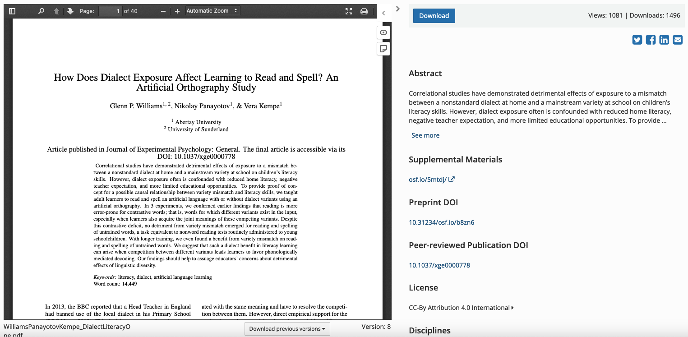Putting it Together
- Check out our OSF project with linked registrations and preprint here: https://osf.io/5mtdj/.
- It’s not perfect (and nothing can be), but shows a willingness to engage in open science.
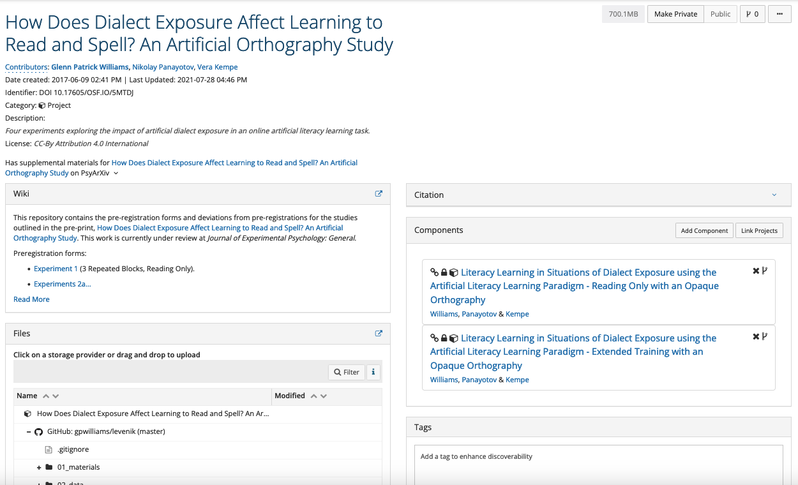
Planning with Programming
R can help you to plan your project ahead of time.
Work with dummy/simulated data to plan all analyses in detail or even to do simulation-based power analyses.
Write up analyses before seeing your data, saving time head of project completion.
The more work you do ahead of time means you’re more likely to catch errors when you can do something about them.
Advanced Literate Programming
So far, we’ve used Quarto to make codebooks to provide write ups with our data processing, analysis, and presentation.
But you can make full papers, books, blogs/websites by using Quarto with GitHub Pages.
Turn a repo into a website, hosting a free static site!
More on Advanced Literate Programming
The Quarto devs have good walkthroughs on various output formats.
Books at https://quarto.org/docs/books/.
Papers at https://quarto.org/docs/journals/.
Websites at https://quarto.org/docs/websites/. Combine with GitHub pages.
Exercises
Please complete the exercises at https://github.com/gpwilliams/ds-psych_course.